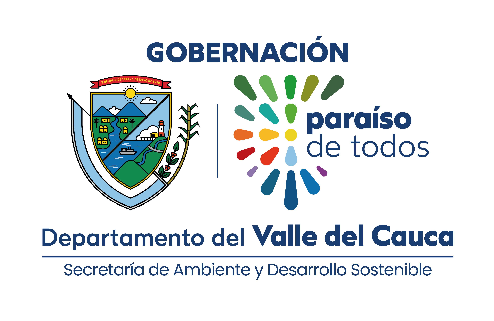

Sistema de
Indicadores
·
Seguimiento y Reportes
Bienvenido al sistema
Ingresa tus credenciales institucionales para acceder a la plataforma.

© 2026 Gobernación del Valle del CaucaIngresa tus credenciales institucionales para acceder a la plataforma.

© 2026 Gobernación del Valle del Cauca